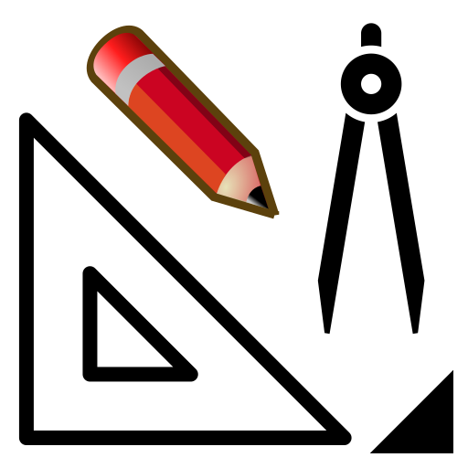
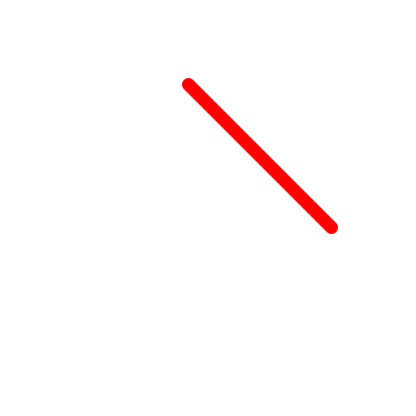
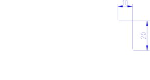

Abschrägen
Werkzeugleiste / Symbol:


Menü: Modifizieren - Abschrägen
Tastenkürzel: C, H
Kommandos: bevel | chamfer | ch
Beschreibung:
Schrägt eine Ecke einer Kontur ab. Optional können die beteiligten Objekte
so getrimmt werden, dass sie zusammen mit der Abschrägung einen geschlossenen
Konturzug bilden.

Vorgehensweise:
- Geben Sie die Geometrie der Abschrägung in der Optionenwerkzeugleiste
ein. 'Länge 1' ist der Abstand der Abschrägung vom Schnittpunkt der beiden
Objekte auf dem ersten Objekt. 'Länge 2' ist der gleiche Abstand für das
zweite Objekt.
- Aktivieren Sie 'Trimmen' wenn Sie die beiden Objekte der Ecke automatisch
bis zur Abschrägung trimmen wollen. Wenn diese Option nicht angewählt wird,
bleiben die ursprünglichen Objekte unverändert.
- Wählen Sie das erste Objekt (eine Linie oder ein Kreisbogen).
- Wählen Sie das zweite Objekt.